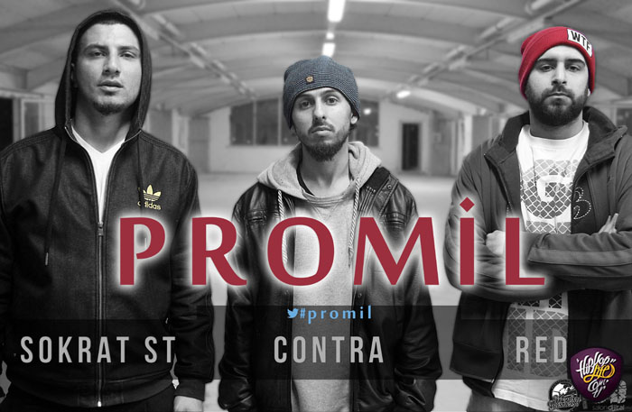

Contra & Sokrat ST & Red - Promil
(Video)

Contra & Sokrat ST & Red - Promil(Video)
Contra, Sokrat ST ve Red, "Promil" isimli parçaları için performans içerikli bir video hazırladı. Tüm prodüksiyon işlemleri Red tarafından yapılan çalışmanın çekimleri Salon Digital bünyesinden bulunan Murat Özbey'e ait. İyi seyirler...
Ana Sayfa
|
Underground
|
İletişim & Üye Ol
|